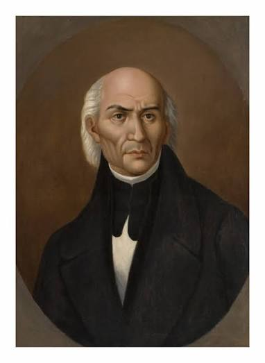
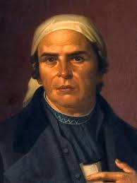
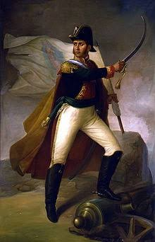
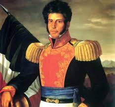
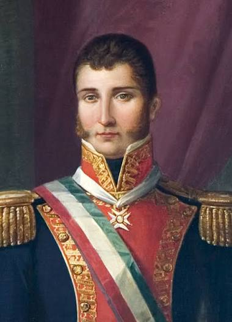
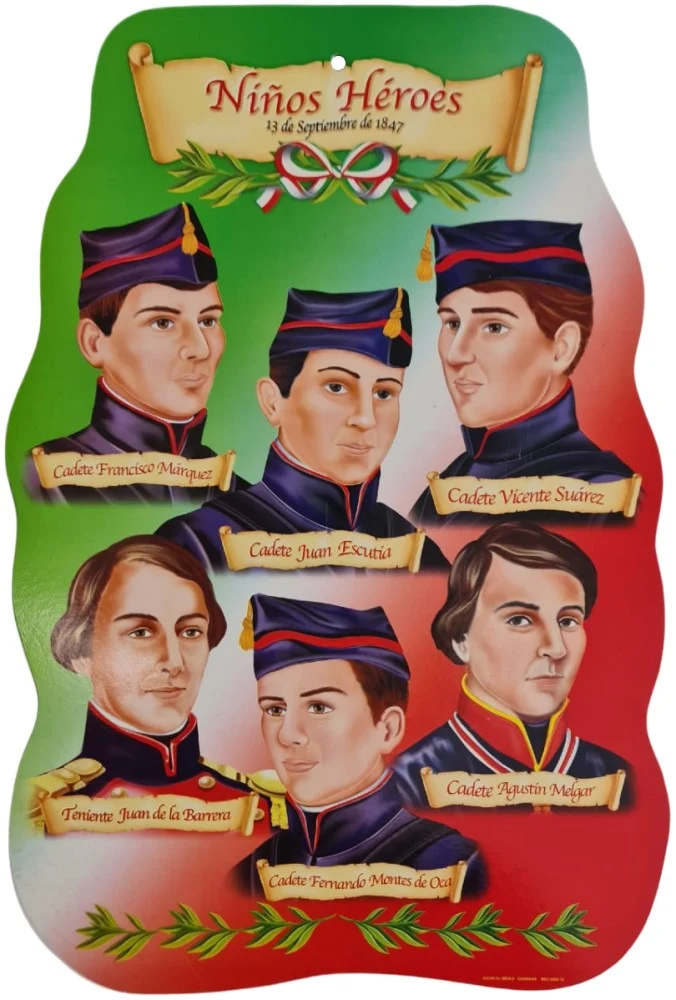

PERSONAJES ILUSTRES
Miguel Hidalgo y Costilla (El Padre de la Patria)

Encabezó el Grito de Dolores el 16 de septiembre de 1810, unificando a las clases populares para iniciar el levantamiento armado contra el dominio español.
Josefa Ortiz de Domínguez (La Corregidora)

Pieza clave de la Conspiración de Querétaro; al ser descubiertos, logró enviar el aviso oportuno a los insurgentes para adelantar el inicio de la lucha.
José María Morelos y Pavón (El Siervo de la Nación)

Lideró la segunda etapa militar de la Independencia, organizó el Congreso de Anáhuac y promulgó los Sentimientos de la Nación. Documento base para la primera constitucion del pais
Ignacio Allende

Lideró la segunda etapa militar de la Independencia, organizó el Congreso de Anáhuac y promulgó los Sentimientos de la Nación, documento base para la primera constitución del país.
Vicente Guerrero

Mantuvo viva la llama de la resistencia insurgente mediante la guerra de guerrillas en las montañas del sur cuando el movimiento casi había sido sofocado.
Agustín de Iturbide

Comandante del ejército realista que pactó el Abrazo de Acatempan con Guerrero, redactó el Plan de Iguala y encabezó la entrada del Ejército Trigarante a la Ciudad de México el 27 de septiembre de 1821 para consumar la independencia.
Los Niños Héroes

Cadetes del Colegio Militar que defendieron el Castillo de Chapultepec el 13 de septiembre de 1847 frente a la invasión estadounidense.